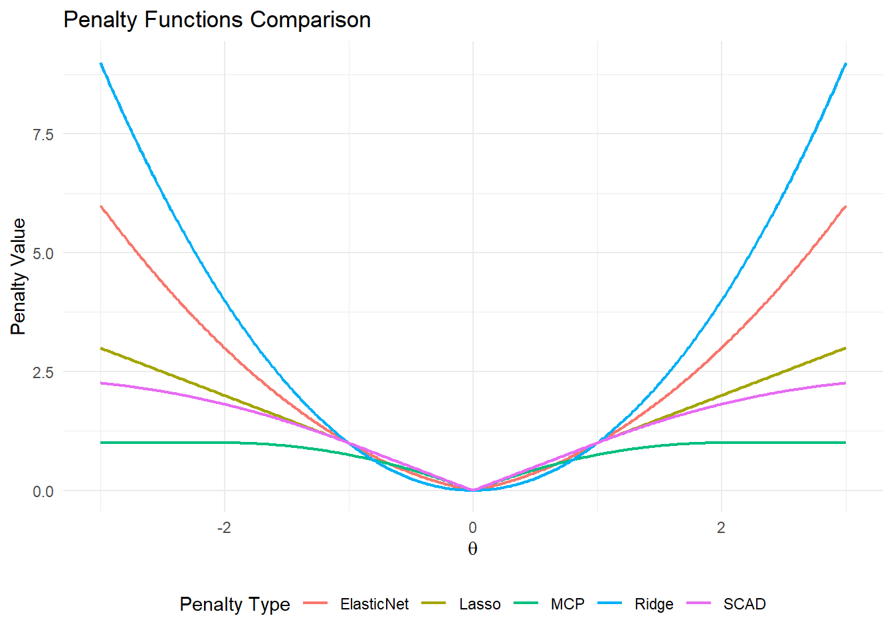

正则化回归方法
1 线性回归回顾及其局限性
线性回归是一种广泛应用于统计学和机器学习中的方法，用于研究一个因变量与一个或多个自变量之间的线性关系。线性回归模型可以表示为： y_i = \beta_0 + \beta_1 x_{i1} + \beta_2 x_{i2} + \dots + \beta_p x_{ip} + \epsilon_i, \quad \quad i=1,\cdots,n \tag{1}
其中：
y_i 是第 i 个观测的因变量
x_{i1}, x_{i2}, \dots, x_{ip}是第 i 个观测的自变量
\beta_0, \beta_1, \dots, \beta_p是回归系数
\epsilon_i 是误差项。
令\mathbf{y} = (y_1,\cdots,y_n)^T, \boldsymbol \beta=(\beta_0,\beta_1,\cdots,\beta_p)^T，\boldsymbol \epsilon = (\epsilon_1,\cdots,\epsilon_n)^T，以及 \mathbf{X} = \begin{bmatrix} 1 & x_{11} & x_{12} & \cdots & x_{1p} \\ 1 & x_{21} & x_{22} & \cdots & x_{2p} \\ \vdots & \vdots & \vdots & \ddots & \vdots \\ 1 & x_{n1} & x_{n2} & \cdots & x_{np} \end{bmatrix}. 那么线性回归模型 式 1 可以用矩阵的形式表示为： \mathbf y = \mathbf{X} \boldsymbol{\beta} +\boldsymbol{\epsilon}. 普通最小二乘法（OLS）的目标是最小化残差平方和，通常也称为L_2损失函数，其公式为：
L(\boldsymbol \beta) =\|\mathbf y - \mathbf X \boldsymbol \beta\|_2^2 = \sum_{i=1}^n (y_i - \beta_0 - \beta_1 x_{i1} - \beta_2 x_{i2} - \cdots - \beta_p x_{ip})^2 \tag{2} 其中\|\cdot\|_2为向量的L_2范数。最小化 式 2 可以得到回归系数的估计量：
\hat{\boldsymbol{\beta}}^{OLS} = (\mathbf{X}^T \mathbf{X})^{-1} \mathbf{X}^T \mathbf{y}. 关于OLS估计量最为有名的结论是Gauss-Markov定理，该定理表明OLS估计量在所有\beta的线性无偏估量中方差最小，也即均方误差\mathrm{MSE}(\hat \beta) = E\left[\hat \beta - \beta\right]\left[\hat \beta - \beta\right]^T最小。但是，如果将有偏估计量也纳入考虑的话，可能存在一个有偏估计量以少量偏差为代价换来估计量方差的大幅减小，最终其均方误差比OLS估计量更小。在一些特殊情况下，为得到偏差和方差之间的平衡，这一类估计量是必要的：
自变量x_{i1}, x_{i2}, \dots, x_{ip}间存在较强的相关性，OLS估计量方差膨胀，估计结果不稳健；
当自变量个数大于样本容量，即p>n时，X^TX 不可逆，OLS失效。
2 正则化方法简介
正则化方法在OLS目标函数 式 2 的基础上引入回归系数的惩罚项，通过限制回归系数估计的变化幅度来实现压缩估计。一般来说，正则化回归方法的目标函数可以表示为 L_R(\boldsymbol \beta) = \sum_{i=1}^n (y_i - \beta_0 - \beta_1 x_{i1} - \beta_2 x_{i2} - \cdots - \beta_p x_{ip})^2 + \sum_{j=1}^p p_{\lambda}(\beta_j), \tag{3} 其中\sum_{j=1}^p p_{\lambda}(\beta_j)是对回归系数\beta_1,\cdots,\beta_p的惩罚项，需要指出的是，我们一般不对截距\beta_0施加惩罚。惩罚项中包含一个超参数\lambda，该参数控制整体惩罚强度，需要在估计前予以给定。一般来说，当\lambda\to 0时，正则化估计逼近OLS解，而当\lambda \to \infty时，正则化估计趋于0。惩罚项中函数p_{\lambda}(\cdot)的不同形式对应着不同的正则化方法。
需要注意的是，一般来说，在进入正则化回归之前，自变量数据需要进行标准化的预处理。标准化可以消除量纲的影响，让不同变量在相同尺度上，这样正则化才不会偏向某个变量。此外，标准化还能加速优化过程。在没有标准化的情况下，梯度下降可能会在不同方向上变化很大，导致收敛速度变慢。预处理后，数据分布更均匀，优化过程更高效。
2.1 Ridge
Ridge回归的惩罚函数是平方形式，通常称之为L_2惩罚，具体表达式为 p_\lambda^{ridge}(\beta_j) = \lambda \beta_j^2,
对应的最小化 式 3 存在显示解析解 \hat{\boldsymbol \beta}^{ridge} = (\mathbf X^T \mathbf X + \lambda I)^{-1} \mathbf X^T \mathbf y, 其中I为单位矩阵。Ridge回归可以有效解决自变量存在较高相关性时的方差膨胀问题。在高维回归问题上，我们通常假设回归系数(\beta_1,\cdots,\beta_p)具有稀疏性，即仅有少量的\beta_j不为0，在这种情况下，我们不仅需要正则化实现压缩估计的目的，更需要将部分估计压缩到0，以实现变量选择的作用。但是，Ridge回归无法有效地进行变量选择。
2.2 Lasso
Lasso回归的惩罚函数是绝对值形式，又称为L_1惩罚，具体形式为 p_\lambda^{lasso}(\beta_j) = \lambda \left|\beta_j \right|. 在L_1惩罚函数下，由于是在菱形约束区域内寻找最小化残差平方和，Lasso回归可以得到回归系数估计的稀疏解，这也称之为L_1惩罚的角点效应。假设高维回归模型的确是稀疏的，那么在一些假设条件下可以证明Lasso在极限（即样本容量n和变量个数p趋于无穷）下可以正确筛选出非0系数的自变量。与Ridge回归不同，Lasso估计量一般没有显示解析表达式，需要依赖数值优化。 表 1 列出并比较了Lasso以及其它几种正则化方法的数值寻优算法。
| 方法 | 典型算法 | 计算复杂度 |
|---|---|---|
| Ridge | 直接矩阵求逆 | O(p^3) |
| Lasso | 坐标下降法 | O(np) |
| Elastic Net | 广义坐标下降法 | O(np) |
| SCAD/MCP | 局部二次近似(LQA)或坐标下降 | O(np) |
我们进一步比较Ridge与Lasso回归的压缩估计结果。当矩阵 \mathbf X为正交矩阵时，两种估计量存在解析表达式，我们有\hat \beta_j^{ridge}=\hat \beta_j/(1+\lambda)以及\hat \beta_j^{lasso} = sign(\hat \beta_j)(| \hat \beta_j| - \lambda)_+，其中\hat \beta_j 为OLS估计量。可以发现，两种估计量都是不一致的，Ridge回归所做的是等比例压缩，而Lasso回归属于线性压缩，即始终将OLS估计量向0移动\lambda，直到在0处截断。Lasso回归的这种压缩方式的一个不足在于可能带来较大的偏差，尤其是当系数的绝对值\left|\beta_j\right|较大时。
2.3 Elastic Net
为了综合Lasso的变量选择功能以及Ridge的等比例压缩优势，Elastic Net回归对L_1惩罚和L_2惩罚进行加权平均，从而得到 p_\lambda^{enet}(\beta_j) = \lambda\left\{\alpha|\beta_j|+(1-\alpha)\beta_j^2 \right\}. 其中参数\alpha控制L_1/L_2混合比例（\alpha=0为Ridge，\alpha=1为Lasso）。
需要指出的是，提出Elastic Net的另一个出发点在于模拟一般化的L_q惩罚，其中q\in (1,2)，即惩罚函数为p_\lambda(\beta_j) = \lambda |\beta_j|^q。相较于L_q惩罚，Elastic Net在计算上更为简便。
2.4 Smoothly Clipped Abosolute Deviation (SCAD)
与Ridge、Lasso以及Elastic Net的惩罚函数均为凸函数不同，接下来要介绍的SCAD和MCP的惩罚函数非凸，因此常统称为非凸惩罚。这两种非凸惩罚函数旨在保留Lasso的变量选择功能的同时缓解Lasso偏差过大的不足。
SCAD惩罚函数是一种常用的非凸惩罚函数，广泛应用于高维数据的变量选择问题。其具体形式如下：
p_{\lambda, a}(\beta_j) = \begin{cases} \lambda |\beta_j| & \text{if } |\beta_j| \leq \lambda, \\\ \frac{2a\lambda |\beta_j| - \beta_j^2 - \lambda^2}{2(a-1)} & \text{if } \lambda < |\beta_j| \leq a\lambda, \\ \frac{\lambda^2(a+1)}{2} & \text{if } |\beta_j| > a\lambda, \end{cases}
其中a > 2是形状参数，通常取值为3.7。

上图绘制了不同惩罚函数的图像。将SCAD与Lasso对比可以发现：当\beta_j \leq \lambda时，SCAD惩罚函数与L_1惩罚（Lasso）相同，表现为线性增长。当\lambda < |\beta_j| \leq a\lambda 时，SCAD惩罚函数逐渐平滑地过渡到二次增长，避免对较大系数的过度惩罚。当|\beta_j| > a\lambda 时，SCAD惩罚函数变为常数，不再对更大的系数施加额外惩罚。
SCAD惩罚函数的设计使得它能根据系数的大小自适应地调整惩罚强度：对于较小的系数施加较大的惩罚（类似于 Lasso），而对于较大的系数施加较小的惩罚（类似于 Ridge）。这种自适应性使得 SCAD 在估计中既保留了变量选择功能（在理论上具有 Oracle 性质，即在满足一定条件下，SCAD 估计量能够以概率 1 选择出真实的模型），又避免了使得它对于较大的系数施加过度的惩罚，从而避免了估计偏差。
2.5 Minimax Concave Penalty (MCP)
MCP是另外一种常用的非凸惩罚函数，它的形式是 p_{\lambda, \gamma}(\beta_j) = \begin{cases} \lambda |\beta_j| - \frac{\beta_j^2}{2\gamma}, & \text{if } |\beta_j| \leq \gamma \lambda \\ \frac{1}{2} \gamma \lambda^2, & \text{if } |\beta_j| > \gamma \lambda \end{cases} 其中\gamma为形状参数，一般取3。MCP同样具有变量选择的oracle性质，且能自适应地调节惩罚强度，当回归系数超过一定的阈值后，MCP的惩罚趋于常数，从而对较大的系数不会施加过度的惩罚。
无论是SCAD还是MCP都额外引入了形状参数，不同的形状参数值可能会导致不同的估计结果。MCP 在数值优化方便比SCAD更为便捷，但在处理强相关变量时可能不如 SCAD。
2.6 参数选择策略
正则化回归通过引入惩罚项来控制模型的复杂度，防止过拟合，正则化参数 (\lambda)控制了整体的惩罚强度，通常使用 K-fold 交叉验证来选择最优的\lambda。
记数据集\mathcal{D}=(\mathbf X, \mathbf y)。K-fold 交叉验证的步骤如下：
将数据集中的样本点随机划分为K个大小相似的子集，分别记为\mathcal D_1,\cdots,\mathcal D_K。
记\mathcal D_{-k} = \mathcal D \setminus D_k。给定惩罚参数\lambda，按照k=1,\cdots,K依次使用\mathcal D_{-k}作为训练集，拟合正则化回归模型。在拟合模型的基础上使用\mathcal D_k作为验证集，计算模型的预测误差并汇总，得到交叉验证的目标函数： \mathrm{CV}(\lambda)= \frac{1}{K}\sum_{k=1}^K (\mathbf y_k - \mathbf X_k \hat \beta(\lambda;\mathcal D_{-k}))^2, 其中\hat \beta(\lambda;\mathcal D_{-k})是基于惩罚参数\lambda和数据集\mathcal D_{-k}所得到的正则化估计。记\lambda_{opt}=\arg\min_\lambda \mathrm{CV}(\lambda)，我们将\lambda_{opt}作为最优正则化参数。
3 R语言实现
3.1 数据生成
library(glmnet)Loading required package: Matrix
Attaching package: 'Matrix'The following objects are masked from 'package:tidyr':
expand, pack, unpackLoaded glmnet 4.1-8set.seed(2023)
n <- 200 # 样本量
p <- 50 # 变量数
X <- matrix(rnorm(n*p), n, p)
true_beta <- c(rep(2,5), rep(0,p-5)) # 前5个变量有效
y <- X %*% true_beta + rnorm(n, sd=3)3.2 Ridge、Lasso以及Elastic Net回归实现
# 10折交叉验证选择lambda
cv_ridge <- cv.glmnet(X, y, alpha = 0)
plot(cv_ridge, main="")ridge_coef <- coef(cv_ridge, s = "lambda.min")[-1]
cv_lasso <- cv.glmnet(X, y, alpha = 1)
plot(cv_lasso, main="")lasso_coef <- coef(cv_lasso, s = "lambda.min")[-1]
# 设置alpha=0.5混合比例
cv_enet <- cv.glmnet(X, y, alpha = 0.5)
plot(cv_enet, main="")enet_coef <- coef(cv_enet, s = "lambda.min")[-1]3.3 SCAD与MCP回归实现
library(ncvreg)Warning: package 'ncvreg' was built under R version 4.4.3cv_scad <- cv.ncvreg(X, y, penalty = "SCAD", gamma = 3.7)
plot(cv_scad, main="")scad_coef <- cv_scad$fit$beta[-1, which.min(cv_scad$cve)]
cv_mcp <- cv.ncvreg(X, y, penalty = "MCP", gamma = 3)
plot(cv_mcp, main="")
mcp_coef <- cv_mcp$fit$beta[-1, which.min(cv_mcp$cve)]3.4 结果可视化
par(mfrow=c(2,3))
plot(true_beta, type='h', col='red', main="真实系数")
plot(lasso_coef, type='h', main="Lasso估计")
plot(ridge_coef, type='h', main="Ridge估计")
plot(enet_coef, type='h', main="Elastic Net估计")
plot(scad_coef, type='h', main="SCAD估计")
plot(mcp_coef, type='h', main="MCP估计")3.5 性能评估
results <- data.frame(
True = true_beta,
Lasso = lasso_coef,
Ridge = ridge_coef,
Enet = enet_coef,
SCAD = scad_coef,
MCP = mcp_coef
)
# 计算均方误差
mse <- sapply(results[,-1], function(x) mean((x - true_beta)^2))
knitr::kable(t(mse), caption = "各方法系数估计MSE比较")| Lasso | Ridge | Enet | SCAD | MCP |
|---|---|---|---|---|
| 0.0090503 | 0.0540851 | 0.0140827 | 0.0093169 | 0.0092871 |
# 变量选择准确性
selection_acc <- sapply(results[,-1], function(x) {
sum((x != 0) == (true_beta != 0))/p
})
knitr::kable(t(selection_acc), caption = "变量选择准确率")| Lasso | Ridge | Enet | SCAD | MCP |
|---|---|---|---|---|
| 0.88 | 0.1 | 0.66 | 0.98 | 1 |